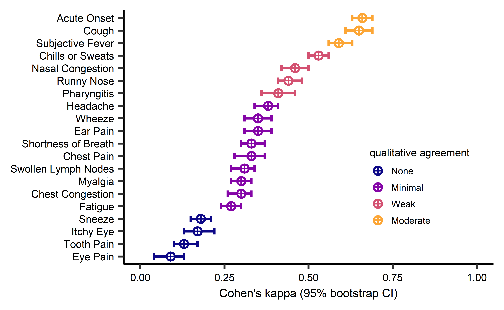
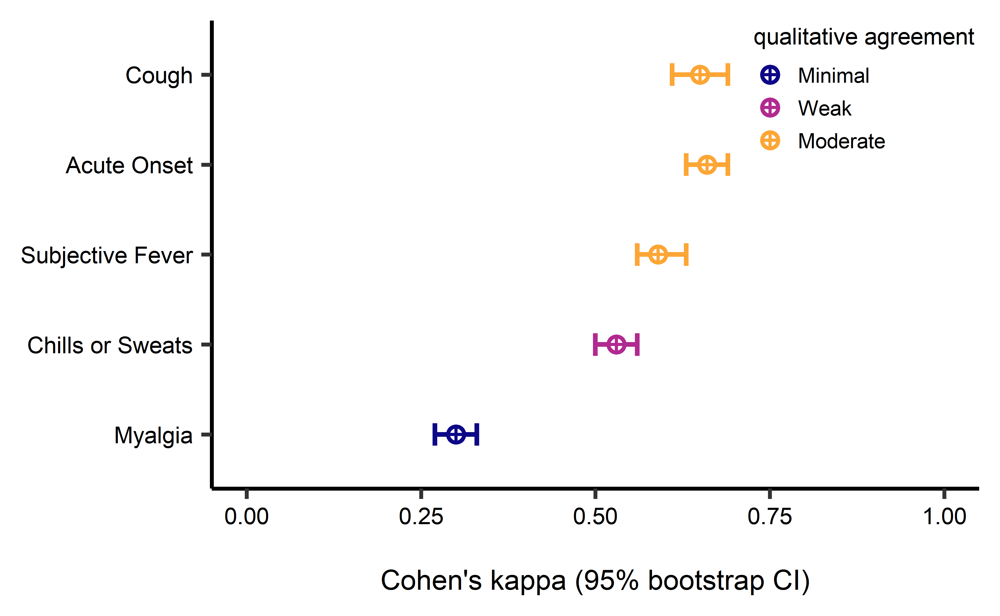
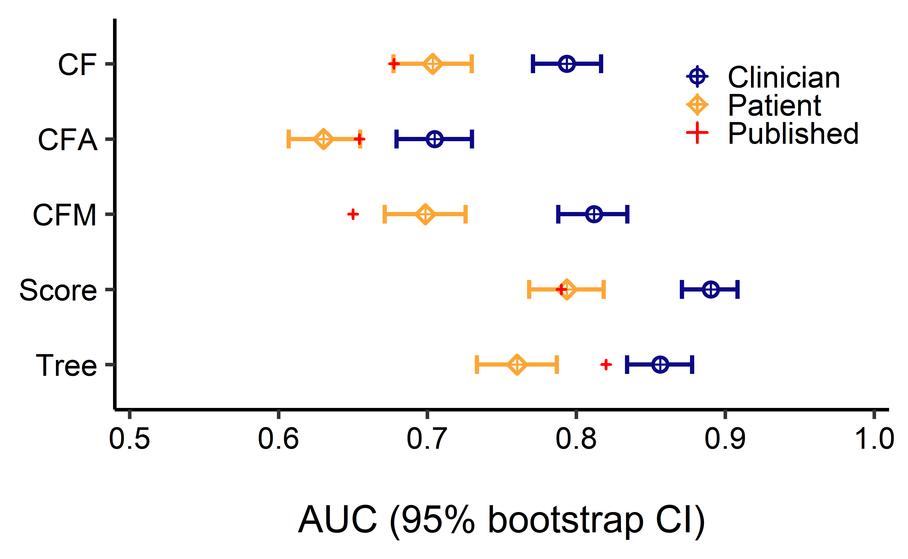
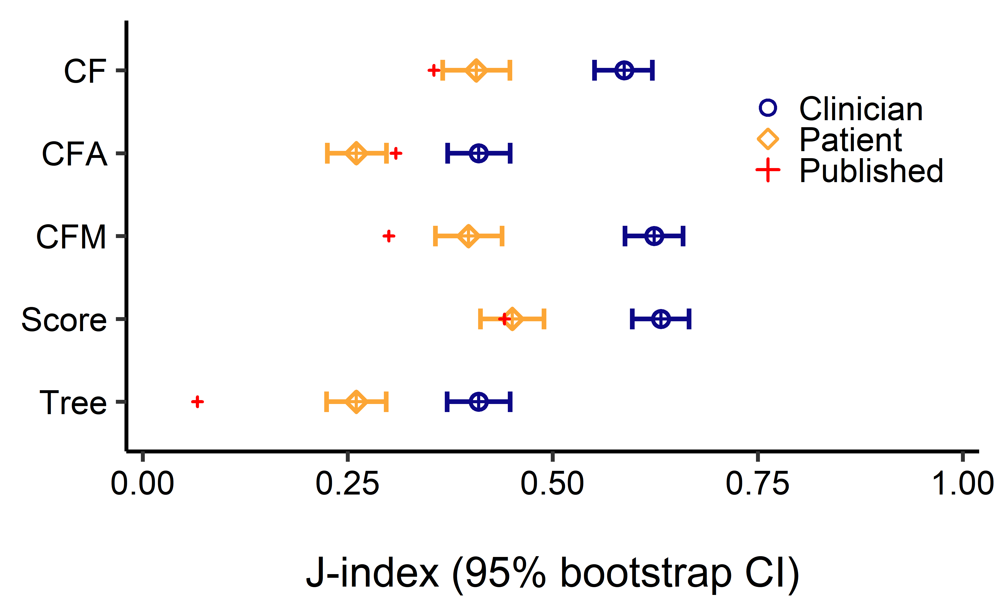
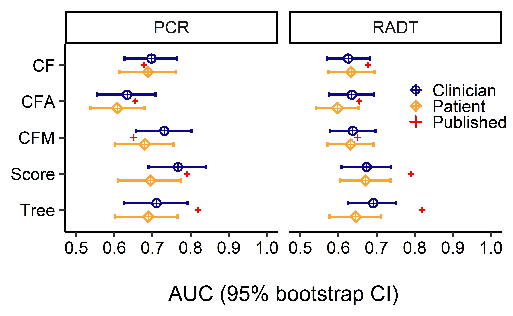

| CPR | previously published | patient data | clinician data |
|---|---|---|---|
| CF | 0.66 | 0.70 | 0.79 |
| CFA | 0.65 | 0.63 | 0.70 |
| CFM | 0.66 | 0.70 | 0.81 |
| Score | 0.79 | 0.79 | 0.89 |
| Tree | 0.82 | 0.76 | 0.86 |
Applicability of diagnostic risk models
for influenza triage and telemedicine
Zane Billings
Coauthors: Annika Cleven, Ariella Perry Dale, Jacqueline Dworaczyk, Mark Ebell, Andreas Handel, Brian McKay
Intro
- Telemedicine, triage, and flu diagnosis
- Patients and clinicians often disagree on symptom reports
- Clinical prediction rules are typically built using clinician-reported data
- Our question: how much do patients and clinicians disagree? Enough to make CPRs ineffective? If so, can we develop better models?
Data source
- Data were collected from UGA UHC from December 2016 – February 2017.
- Patients who reported a respiratory complaint were required to complete a survey. Included reporting a set of symptoms as present or absent.
- Captured EHR data where clinicians were required to check the same set of symptoms.
- Final clinician diagnosis was recorded, and some patients got either a rapid test or PCR test also.
Part 1: Interrater agreement and previous model performance
Symptom report agreement
- We assessed the level of agreement between patient and clinician reports using Cohen’s \(\kappa\) statistic, which accounts for agreement due to chance alone.
- \(\kappa \in [-1,1]\) where \(\kappa = 1\) is perfect agreement, \(\kappa = 0\) is “random” agreement, and \(\kappa = -1\) is perfect disagreement.
- Some research suggests that \(\kappa \geq 0.8\) is an appropriate threshold for “agreement” in a clinical setting1.
Symptom report agreement
Symptom report agreement
Previously reported CPRs
We choose five clinical prediction rules from the existing literature.
- CF: Cough and fever
- CFA: Cough, fever, and acute onset of disease
- CFM: Cough, fever, and myalgias1
- Score: Weighted score from regression2
- Tree: Fast and frugal tree3
We used all five models to get predicted diagnosis from patient-reported symptoms, and from clinician-reported symptoms.
Previously reported CPR performance
We compared the previously-published AUROCC to the AUROCC of the predictions for our data.
Previously reported CPR performance
Previously reported CPR performance
- Interestingly, our patient AUCs are similar to previously published, but clinician AUCs are higher. Why?
- The AUCs don’t tell the whole story – we have to choose cutoffs and compare a different way.
- Our main outcome is clinician diagnosis. Clinicians will be biased – most scores also use PCR, so what if we compare to lab results?
Part 2: Looking beyond AUCs
Thresholds and metrics
- While AUC is easy and nice for researchers, clinicians can’t really use it. We need to choose thresholds for our models.
- Prior research1 suggest a no test/test threshold of 10% and a test/treat threshold of 50%.
- So, we used a risk of 50% or higher as our diagnostic threshold. We plan to investigate the 10% threshold in the future.
Thresholds and metrics
- Once we have binary diagnoses, there are several metrics we could use to quantify how “good” a test is.
- AUC with one cutpoint = balanced accuracy
\[\mathrm{BA} = \frac{\text{sens} + \text{spec}}{2}\]
- Some research suggests Matthews Correlation Coefficient (MCC, \(\phi\)) is most robust, but it is prevalence dependent.
\[\mathrm{MCC} = \text{Corr}\left(\mathrm{truth}, \mathrm{estimate}\right)\]
- \(J\)-index (“informedness”) may be best when comparing across datasets with variable prevalences.
\[J = \text{sens} + \text{spec} - 1\]
- Since influenza prevalence varies widely, we’ll use the \(J\)-index for our comparisons, but we calculated a suite of performance metrics.
- Assessing calibration is also extremely important, and we plan to do this in the future.
Observed vs. previous \(J\)-indices
Part 3: Sample size vs gold standard
Table 1: Subsets recieving lab tests
| diagnosis | Clinician, N = 2,475 | PCR, N = 250 | RADT, N = 420 |
|---|---|---|---|
| negative | 1,769 (71%) | 123 (49%) | 226 (54%) |
| positive | 706 (29%) | 127 (51%) | 194 (46%) |
- Clinicians appear to have negative bias for flu diagnosis in our sample.
- PCR patients were a convenience subsample following the same inclusion/exclusion criteria.1
Clinician/lab test agreement
| Lab method | Cohen’s kappa | 95% bootstrap CI |
|---|---|---|
| PCR | 0.72 | (0.63, 0.80) |
| RADT | 0.36 | (0.29, 0.44) |
- Clinicians and RADT/RIDT disagree often. These tests often have low sensitivity1. We observed moderate agreement between clinicians and PCR, the “gold standard.”
- Clinicians observed lab results prior to diagnosis.
AUC when lab test is the outcome
\(J\)-index when lab test is the outcome

Conclusions and future work
- When clinician diagnosis is the outcome, clinician symptom ratings have more predictive power than patient symptom ratings (as expected).
- There are interesting results with the previously-published performance metrics that we need to look into further. Potentially using the 10% threshold instead of 50% could explain this, but we haven’t checked yet.
- We also need to assess model calibration, which is arguably more important than performance metrics. We could scale predictions to recalibrate if necessary.
- We plan to train risk models using patient data to see if we can get better performance than the previously reported models (Annika will be doing most of this).
- Overall conclusion: Previous diagnostic risk models appear to have inconsistent performance. It is difficult to determine how useful these models will be for telemedicine without more exploration.
- Home testing may be available in the future, but symptom-based models would be much cheaper and easier to implement. However, different test/treat thresholds may be necessary1.
- we need to figure out what metrics are appropriate for us to use.
- Figure 1, add N for yes/no for both groups
- Mark symptoms in fig 1 that are used for scores, skip fig 2
- Model 1 of Afonso 2012 is not a FFT
- be specific about details from previous models
- deep dive on metrics